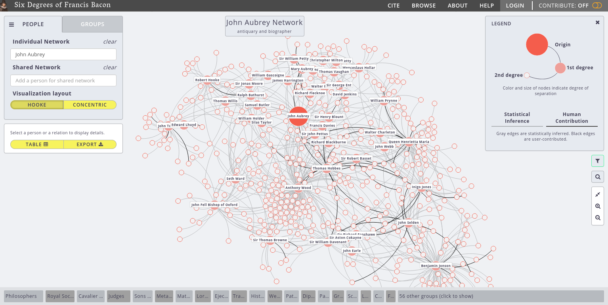
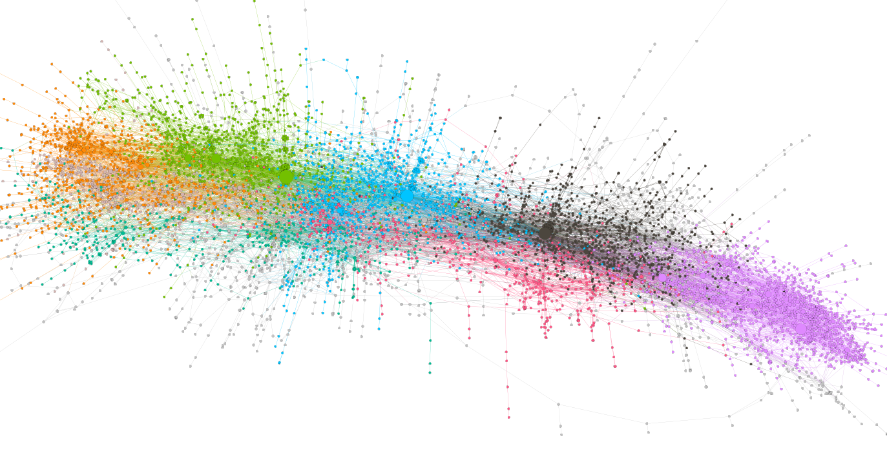
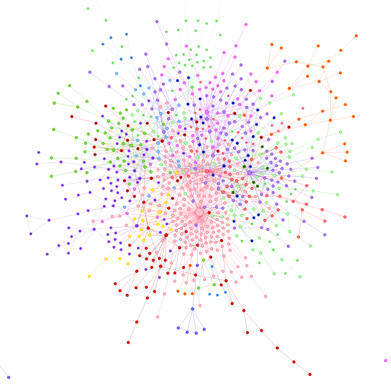
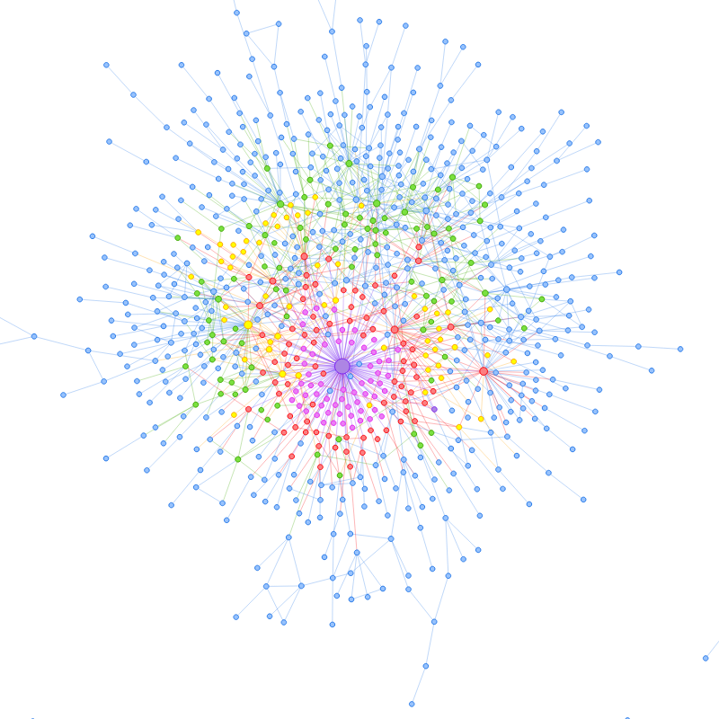
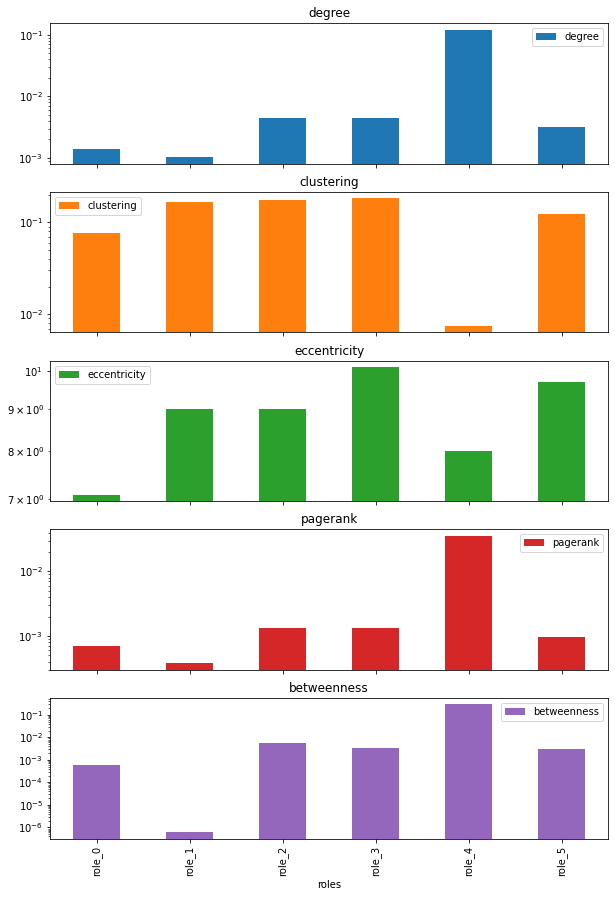
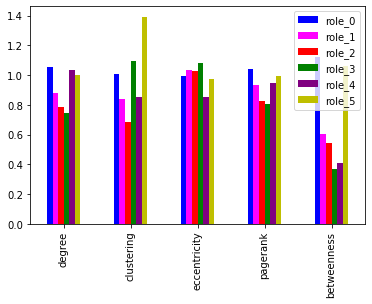
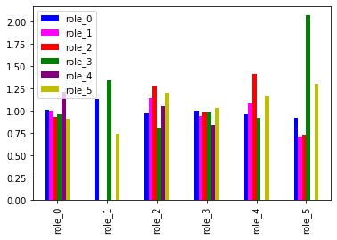
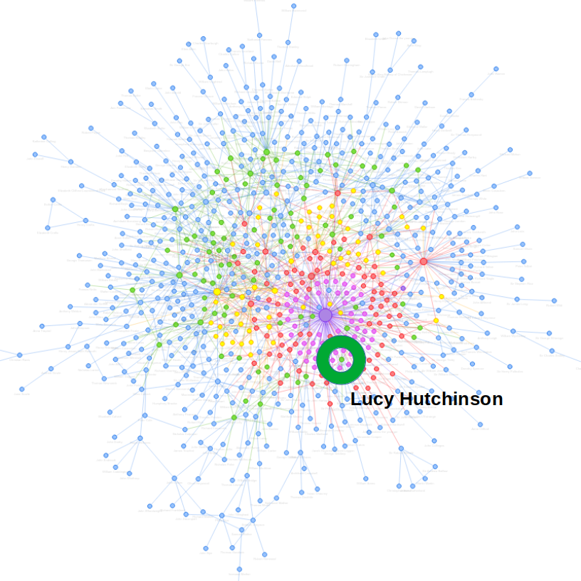
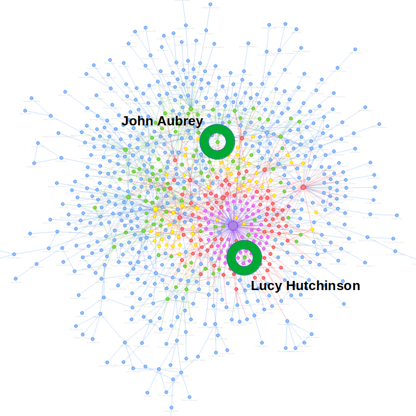

Six Degrees of Francis Bacon and John Aubrey’s Brief Lives
John R. Ladd | @johnrladd | jrladd.com/slides/aubrey
(use arrow keys or spacebar to navigate)
“We may be able to hear, through him, the 17th century talking to and about itself.”
Kate Bennett, ed. Brief Lives (2016)
“John Denham went to the King and desired his Majestie not to hang him [Wither], for that whilest George Withers lived, he should not be the worst Poet in England.” (Aubrey 349)


Community Detection

Role Detection





